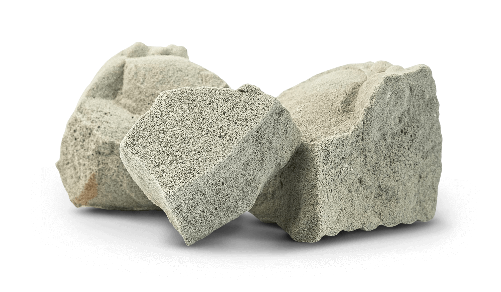

Lose
Als Schüttgut, laut Datenblatt auch lose mit Schütttuch.
 Projekt besprechen
Projekt besprechenPOLICELL NORM
Lastabtragende Wärmedämmung unter der Bodenplatte laut ETA-24/0894. Auch als wärmedämmende Leicht- und Ausgleichsschüttung einsetzbar.

TECHNISCHE DATEN
| Eigenschaft | Wert |
|---|---|
| Wärmeleitfähigkeit λD | ≤ 0,080 W/mK |
| Druckspannung bei 10 % Stauchung | ≥ 800 kPa |
| Schüttgewicht | 130–150 kg/m³ |
| Korngröße | 10–60 mm |
| Schüttdichte, 1,3:1 verdichtet | 169–195 kg/m³ |
| Verdichtungsfaktor | 1,3:1 |
| Mindesteinbauhöhe, verdichtet | 150 mm |
| Trockenrohdichte | 250–330 kg/m³ |
| Material | 100 % hochwertiges, recyceltes Glas |
| Farbe | Grau |
| Feuerbeständigkeit laut Datenblatt | A1 |
| Kapillarbrechend / nagetiersicher | Ja / ja |
Quelle: Technisches Datenblatt Policell NORM, Stand 04.12.2025. Vollständige Angaben und Prüfverweise finden Sie im Original-PDF.
EINSATZ & VERARBEITUNG
Das Datenblatt nennt Parkdächer und Dachflächen, Tiefbauobjekte im Deich-, Straßen-, Brücken- und Landschaftsbau, Gewölbeauffüllungen und Hinterfüllungen.
Keine Verwendung in Beton, Mörtel oder Einpressmörtel. Die Mindesteinbauhöhe beträgt 150 mm im verdichteten Zustand. Material kann lagerungs- und einbaubedingt Feuchtigkeit enthalten.
Die geeignete Ausführung und Dimensionierung sind mit der Fachplanung abzustimmen. Die angegebenen Druckspannungen sind Prüfwerte bei 10 % Stauchung, keine unmittelbar verwendbaren Bemessungslasten.
Technische Beratung findenLIEFERFORMEN
Als Schüttgut, laut Datenblatt auch lose mit Schütttuch.
Im Datenblatt aufgeführt: 1,5 m³, 2 m³ und 3 m³. Verfügbarkeit bitte bei der Anfrage abstimmen.
Lieferadresse, Menge und Entlademöglichkeit werden projektbezogen abgestimmt.
IHR PROJEKT BEGINNT MIT EINEM GESPRÄCH.
Materialwahl, technische Beratung oder Lieferung:
Wir freuen uns auf Ihr Vorhaben.